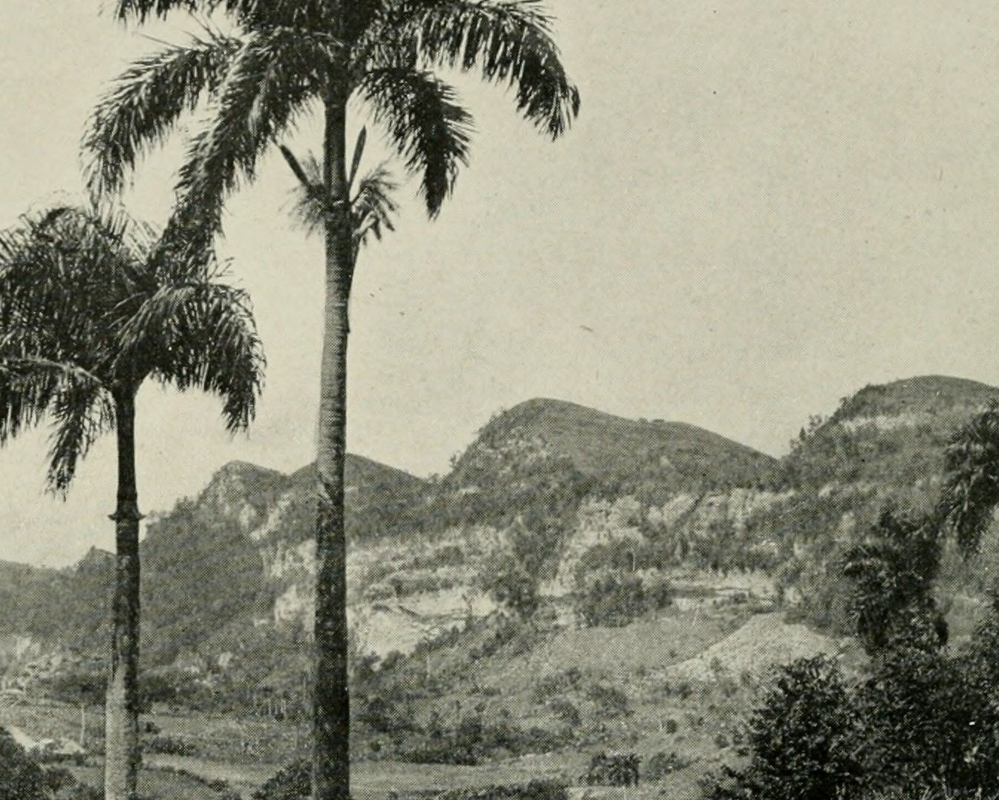

Bienvenido al sitio web oficial del Santuario Forestal de Barranquitas, ubicado en el Barrio Palo Hincado de Barranquitas, Puerto Rico.
Welcome to the official website of the Barranquitas Woodland Sanctuary, located in the Palo Hincado neighbourhood of Barranquitas, Puerto Rico.
El Santuario Forestal de Barranquitas fue establecido en enero de 1921 como parte de una campaña del Departamento de Agricultura para intentar controlar especies de animales invasores en el Estado Libre Asociado de Puerto Rico, pero al mismo tiempo evitar que la flora y fauna nativas sufrieran daños ecológicos o poblacionales. Se establecieron rebaños fundadores para animales asilvestrados, mientras se erradicaban las demás poblaciones de dichas especies para disminuir el riesgo de infestaciones de especies invasoras en fincas y parques naturales, pero al mismo tiempo evitar que estas especies de mamíferos, aves, reptiles y anfibios desaparecieran por completo cercándoles en el santuario.

The Aguada Science Fair of 1921, where the idea of a wildlife sanctuary for keeping invasive species was projected
The farmland where the Barranquitas Woodland Sanctuary was established, then under intensive re-wilding (1936)
The Barranquitas Woodland Sanctuary was established in January 1921 as part of a campaign by the Department of Agriculture to control invasive mammal, bird and herpetofauna species within the ecosystems of the Commonwealth of Puerto Rico, yet avoid any ecological or demographic damage to local flora and fauna. A few founding herds were settled from such invasive species, although the remainder was culled and extirpated to lower the threat of feral infestations of farmlands and national parks, yet at the same time, conserve these ecotypes of the feral mammals, birds, reptiles and amphibians within the sanctuary's limits.
Copyright 2023, Departamento de Agricultura.